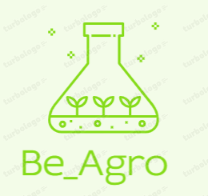

<mat-sidenav-container class="sidenav-container">
  <mat-sidenav #drawer class="sidenav" fixedInViewport
      [attr.role]="(isHandset$ | async) ? 'dialog' : 'navigation'"
      [mode]="(isHandset$ | async) ? 'over' : 'side'"
      [opened]="(isHandset$ | async) === false">
    <mat-toolbar>Menu</mat-toolbar>
    <mat-nav-list>
      <a mat-list-item routerLink="/home/board" [routerLinkActive]="'active'">Dashboard</a>
      <a mat-list-item routerLink="/home/graphic"  [routerLinkActive]="'active'">Reportes</a>
      <a mat-list-item (click)="logout()">LogOut</a>
    </mat-nav-list>
  </mat-sidenav>
  <mat-sidenav-content>
    <mat-toolbar color="primary">
      <button
        type="button"
        aria-label="Toggle sidenav"
        mat-icon-button
        (click)="drawer.toggle()"
        *ngIf="isHandset$ | async">
        <mat-icon aria-label="Side nav toggle icon">menu</mat-icon>
      </button>
      
      <span>&nbsp;Agro-App</span>
    </mat-toolbar>

    <!-- Content -->
    <router-outlet></router-outlet>
    <!-- <app-board></app-board> -->
  </mat-sidenav-content>
  
</mat-sidenav-container>
<div class="container">

  <app-footer></app-footer> 
</div>
